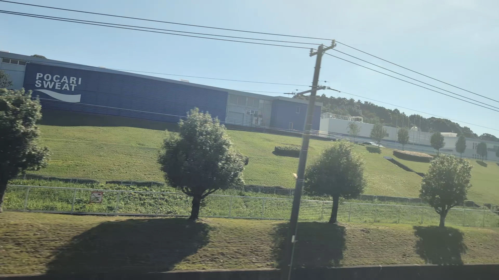
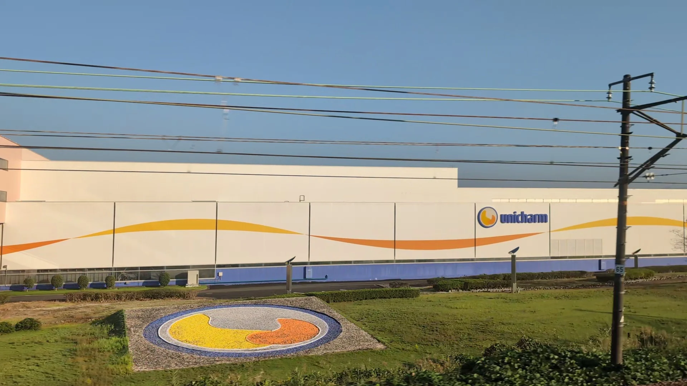
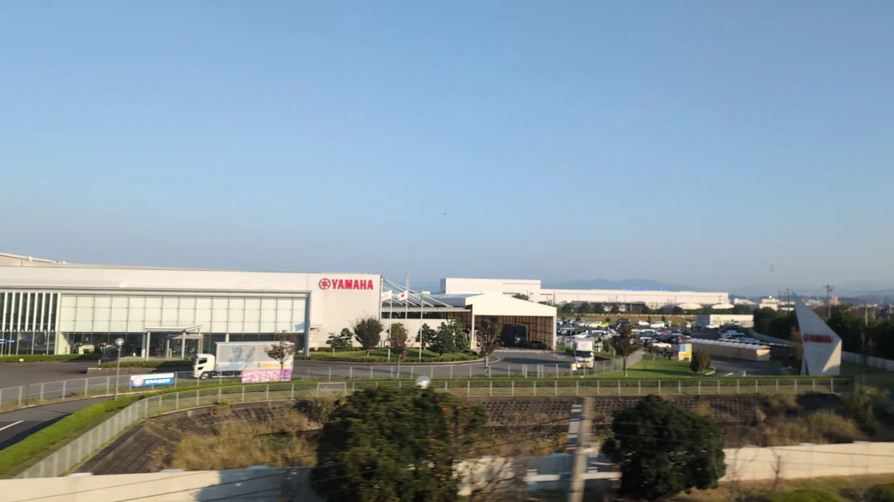

Fotos ansehen
Kaffee, Süßes und Kosmetik: Entdecken Sie Fabriken am Tokaido-Shinkansen mit Fotos und Hinweisen zur Fensterseite A oder E.
Mishima → Shin-Fuji
Am Fuß des Fuji

E-SeiteRechts in Fahrtrichtung UCC, Werk Fuji
Ein Kaffeeturm vor dem Fuji
Achten Sie auf „UCC COFFEE FUJI“ am weißen Turm. Hinter diesem Werk für Röstkaffee erhebt sich der Fuji.

E-SeiteRechts in Fahrtrichtung Nippon Paper, Werk Fuji, Bereich Fuji
Papier für den Alltag am Fuß des Fuji
Rot-weiße Schornsteine vor dem Fuji weisen den Weg. Auf dem Gelände liegt das Werk Shin-Fuji von Crecia-Kasuga, das Haushaltspapier wie Toilettenpapier herstellt.

E-SeiteRechts in Fahrtrichtung Koa Kogyo, Werk am Hauptsitz
Regenbogenlicht über der Fabrik
Hier entsteht unter anderem Papier für Wellpappe. Das Regenbogenlicht auf dem Foto gehört zu einer befristeten Inszenierung vom 11. bis 23. November 2026 und ist kein alltäglicher Anblick.
Shizuoka → Kakegawa
Yaizu und der Fluss Oi

A-SeiteLinks in Fahrtrichtung Sapporo Beer, Brauerei Shizuoka
Shizuokas Bier kommt aus Yaizu
Silberne Tanks in langen Reihen und ein Stern als Markenzeichen: Auch Shizuoka Bakushu, ein nur in Shizuoka verkauftes Bier, kommt aus dieser Brauerei in Yaizu.

E-SeiteRechts in Fahrtrichtung Kibun Foods, Werk Shizuoka
Das „+S“ auf der Fischkuchenpackung
Über einer Reihe roter Dächer erscheint das Kibun-Zeichen. Das Werk stellt Kamaboko und Chikuwa her, japanische Fischkuchen. Der Herstellerstandort-Code „+S“ auf den Produkten verweist auf diesen Ort.
Nahe der Eisenbahnbrücke über den Oi. Ajinomotos Gebäude liegen auf der anderen Seite des Zuges.

E-SeiteRechts in Fahrtrichtung Nestlé Japan, Werk Shimada
Kaffeenamen jenseits des Flusses
Wenn sich das breite Flussbett öffnet, schauen Sie zum Fuß der Hügel. Das Werk Shimada produziert Kaffee und nutzt den Kaffeesatz nach der Extraktion auch als Brennstoff für seine Kessel.
Von der Oi-Brücke flussaufwärts schauen. Das Werk liegt etwa 1,3 km von den Gleisen entfernt.

A-SeiteLinks in Fahrtrichtung Ajinomoto Food Manufacturing und Ajinomoto Bakery
Reisbrei und Brot vor dem Backen
Der Name Knorr steht auf einer gerundeten weißen Wand. An dieser Adresse liegen Ajinomoto Food Manufacturings Werk Shizuoka für Reisbrei und Ajinomoto Bakerys Standort Shimada für tiefgekühlten Brotteig.
Nahe der Oi-Eisenbahnbrücke, auf der gegenüberliegenden Gleisseite vom rot markierten Kibun-Turm.
Quellen
- Ajinomoto Food Manufacturing: Produkte des Werks Shizuoka (Japanisch)
- Ajinomoto Bakery: Herstellung von tiefgekühltem Brotteig (Japanisch)
- Ajinomoto Bakery: Adresse des Standorts Shimada (Japanisch)
Das Foto erlaubt die Zuordnung des äußeren Werksgeländes. Welche Produktionslinien in welchen Gebäuden liegen, ist nicht bestätigt.
Kakegawa → Hamamatsu
Kakegawa, Fukuroi und Hamamatsu

A-SeiteLinks in Fahrtrichtung Shiseido, Werk Kakegawa
Make-up unter einem langen weißen Dach
Ein großes weißes Dach zieht sich an den Gleisen entlang. Das Werk stellt Make-up her; beim Versand schützt das Dach die Produkte vor Wind, Regen und Sonne.

A-SeiteLinks in Fahrtrichtung Marudai Food, Werk Shizuoka
Ein „+P“ führt nach Kakegawa
Über den Bäumen erscheint das rote Marudai-Food-Zeichen, darunter eine Reihe runder Fenster. 2023 stellte das Unternehmen hier gefertigte lange Wiener Würstchen vor. Auf Verpackungen trägt dieser Standort den Code „+P“.
Etwa 4 km vom Bahnhof Kakegawa Richtung Hamamatsu. Richtung Shin-Osaka nach Shiseido.

A-SeiteLinks in Fahrtrichtung POLA Chemical Industries, Werk Fukuroi
Der eigene Zug im Spiegelbild
Beobachten Sie die lange Glasfront dieser Kosmetikfabrik. Bei passendem Licht spiegelt sich darin der Shinkansen, in dem Sie gerade sitzen.

A-SeiteLinks in Fahrtrichtung Otsuka Pharmaceutical, Werk Fukuroi
Pocari Sweat auf einer blauen Wand
Hinter grünem Rasen steht eine große blaue POCARI-SWEAT-Wand. So ist das Werk leicht zu erkennen: Hier entstehen Getränke, darunter Pocari Sweat.

E-SeiteRechts in Fahrtrichtung Nitto Kogyo, Werk Kakegawa
Schutzkästen für die Elektrik
Achten Sie auf NITO und den japanischen Firmennamen an der weißen Wand. Die hier gefertigten kleinen Gehäuse nehmen elektrische Anlagen auf und schützen sie.

E-SeiteRechts in Fahrtrichtung Unicharm Products, Werk Shizuoka
Das Markenzeichen steht auch im Garten
Folgen Sie den gelben und orangefarbenen Wellen an der weißen Wand. Auch im Garten erscheint ein großes Markenzeichen. Hier entstehen unter anderem Windeln für Babys und Erwachsene, Menstruationsprodukte und Reinigungstücher.
Etwa 4 km vom Bahnhof Kakegawa Richtung Hamamatsu. Richtung Shin-Osaka nach Nitto Kogyo.

E-SeiteRechts in Fahrtrichtung House Foods, Werk Shizuoka
Curry, Eintopf und Knabbereien
Suchen Sie den Turm mit dem Namen House Foods. Dieses Werk in Fukuroi produziert Vermont Curry, Hokkaido Stew und Tongari-Corn-Snacks.

E-SeiteRechts in Fahrtrichtung Yamaha Motor, Werk Fukuroi Süd
Von den Gleisen auf die Weltmeere
Rote YAMAHA-Buchstaben und weiße senkrechte Lamellen sind die Erkennungszeichen. Hier werden Außenbordmotoren gebaut, die am Heck eines Bootes sitzen.

E-SeiteRechts in Fahrtrichtung Teibow, Werk am Hauptsitz
Vom Hutfilz zur Schreibspitze
Das grüne TEIBOW-Schild kennzeichnet Hauptsitz und Werk einer Firma, die von der Verarbeitung von Hutfilz zur Fertigung von Schreibspitzen fand.
Quellen
Welche einzelnen Produktarten heute in diesem Werk gefertigt werden, ist nicht bestätigt.
Hamamatsu → Toyohashi
Takatsuka, Hamana-See und Toyohashi

A-SeiteLinks in Fahrtrichtung Suzuki, Hauptsitz Takatsuka
Ein rotes S über den Hausdächern
Über den Dächern taucht das rote S auf, das man von Suzuki-Autos kennt. Hier liegt der Hauptsitz. Die früher in Takatsuka angesiedelte Fertigung von Motorradmotoren zog 2018 nach Miyakoda in Hamamatsu um.
Nahe dem JR-Bahnhof Takatsuka, zwischen dem Bahnhof Hamamatsu und dem Hamana-See. Richtung Shin-Osaka vor dem See, Richtung Tokyo danach.

A-SeiteLinks in Fahrtrichtung Sinfonia Technology, Werk Toyohashi
Siliziumscheiben behutsam bewegen
Hinter dem Rasen steht an der langen Wand „Werk Toyohashi“ und „Gegründet 1917“. Dies ist ein wichtiges Werk für Anlagen, die dünne Siliziumscheiben sauber durch die Herstellung von Chips für Smartphones und andere Geräte transportieren.
In Miya-cho, Toyohashi, vom Bahnhof Futagawa aus auf der Tokyo-Seite. Richtung Shin-Osaka vor Toyohashi, Richtung Tokyo nach der Abfahrt dort.
Quellen
- Sinfonia: Transportanlagen für die Halbleiterfertigung und Werk Toyohashi (Japanisch)
- Sinfonia: Werk Toyohashi und Shinkansen (Japanisch)
- Sogo Hodo: das rund 70 m lange Schild in Sasashima, Nagoya (Japanisch)
- Chuden Clavis: Werbung an der Ostwand in Sasashima (Japanisch)
Derselbe Firmenname ist etwa 800 m südlich des Bahnhofs Nagoya zu sehen. Dort handelt es sich um eine rund 70 m lange Werbung an der Wand des Einkaufszentrums Market Square Sasashima.
Auch das Schild in Nagoya ansehen

Mikawa-Anjo → Nagoya
Anjo

E-SeiteRechts in Fahrtrichtung Yamazaki Baking, Werk Anjo
Frühstücksbrot direkt an den Gleisen
Das Sonnenzeichen und der rote Yamazaki-Name erscheinen ganz nah am Zug. Dieses Werk bei Mikawa-Anjo stellt Brot sowie japanische und westliche Süßwaren her.

E-SeiteRechts in Fahrtrichtung Nichiban, Werk Anjo
Bekanntes Schild, neue Aufgaben
Das rot-weiß-blaue Cellotape-Schild fällt ins Auge. Das Werk für Klebebänder hat seine Aufgaben auch auf Produkte für die medizinische Versorgung ausgeweitet.
Quellen
- Nichiban: jährlicher Wertpapierbericht 2026, S. 37 (Japanisch)
- Nichiban: Erläuterung zur Neuordnung der Produktion, 2025 (Japanisch)
- Nichiban: vom Zug sichtbare Wandwerbung (Japanisch)
Die Anlagenangaben von 2026 nennen Klebebänder für medizinische Hilfszwecke sowie Papier- und Kunststoffklebebänder. Laut einer offiziellen Erläuterung von 2025 wurde die Produktion rund um Cellotape in Saitama gebündelt. Das Schild allein belegt daher keine heutige Cellotape-Produktion in Anjo.
Nagoya → Gifu-Hashima
Kiyosu

E-SeiteRechts in Fahrtrichtung Kirin Beer, Brauerei Nagoya
Tanks wie riesige Biergläser
Silbern und golden gestrichene Tanks stehen in langen Reihen. Hinter Nagoya Richtung Shin-Osaka liegt diese Brauerei in Kiyosu, in der Kirin Ichiban gebraut wird.
Maibara → Kyoto
Maibara, Hikone und Omi

A-SeiteLinks in Fahrtrichtung Yanmar, Forschungs- und Entwicklungszentrum
Eine große Uhr kurz hinter Maibara
Ein langes Gebäude trägt rote YANMAR-Buchstaben und eine große Uhr. Das zentrale Forschungszentrum in Maibara arbeitet an sparsamen Motoren und alternativen Energien.
Richtung Shin-Osaka kurz nach Maibara: Ein Kodama-Reisebericht nennt etwa eine Minute nach Abfahrt. Richtung Tokyo vor der Ankunft in Maibara.

E-SeiteRechts in Fahrtrichtung Fujitec Big Wing
Wo das tägliche Auf und Ab entsteht
Der hohe Turm dient der Aufzugsforschung. Auf demselben Gelände werden Standardaufzüge und Sonderanfertigungen gebaut. Forschung und Produktion liegen hier beieinander.

A-SeiteLinks in Fahrtrichtung Lotte, Werk Shiga
Süßigkeiten im Riesenformat
Große Schilder zeigen Süßigkeiten und Eis. Das Werk produziert unter anderem das Mochi-Eis Yukimi Daifuku, Coolish und Toppo. Nicht alle auf den Schildern gezeigten Produkte werden hier hergestellt.

A-SeiteLinks in Fahrtrichtung Nissin Foods, Werk Shiga
Auch Reis im Becher kommt von hier
Suchen Sie in Ritto nach dem Nissin-Foods-Gebäude. Hier entstehen auch Instant-Reisgerichte wie Curry Meshi. Es ist ein anderes Werk als das Kansai-Werk auf der gegenüberliegenden E-Seite.
Kyoto → Shin-Osaka
Yamazaki

E-SeiteRechts in Fahrtrichtung Suntory, Destillerie Yamazaki
Whisky am Fuß der Hügel
Hinter Hausdächern und Stromleitungen erscheint der Name Yamazaki. Diese Destillerie stellt den Malt Whisky für den Single Malt Yamazaki her.
Auf welcher Seite schauen?
A und E sind die Fensterplätze in normalen Wagen mit 3+2 Sitzplätzen pro Reihe. Richtung Shin-Osaka liegt A links und E rechts; Richtung Tokyo liegt A rechts und E links. Im Green Car entspricht der Fensterplatz D der E-Seite im normalen Wagen. Die Buchstaben bleiben auf derselben Seite der Strecke, nur links und rechts in Fahrtrichtung wechseln.
Zum Guide und seinen Quellen
Aufgaben und Produkte wurden im November 2026 anhand von Unterlagen zum jeweiligen Standort geprüft, darunter offizielle Firmenangaben. Nicht jedes Produkt auf einer Werbetafel wird dort hergestellt. Vorgestellt werden auch Suzukis Hauptsitz auf dem früheren Werksgelände in Takatsuka und Yanmars Forschungszentrum. Die Orte sind nach Bahnhofsabschnitten gruppiert; innerhalb eines Abschnitts entspricht die Anordnung nicht genau der Reihenfolge der Vorbeifahrt. Entfernungen sind Näherungswerte. Zugtempo und Licht verändern den Ausblick. Der Zusatz „Japanisch“ bezeichnet die Sprache der Quelle.
Aufnahmen aus dem Zug: michikusa. Gestaltung des Zuges auf dem POLA-Foto: © Disney.
栗原景『東海道新幹線の車窓は、こんなに面白い！』 — Toyo Keizai, 2016 (japanische Originalausgabe)